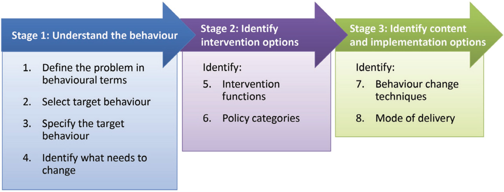

Following the BCW Guide: Workshops with EQUATOR
Introduction
Having identified factors that may limit the impact of reporting guidelines (chapters 3 - 6) and selected the Behaviour Change Wheel as a framework [1] (chapter 7), my next step was to use the framework to turn reporting guidelines into a behaviour change intervention. In my introduction I describe how the reporting guideline system grew organically and I justified why I wanted to redesign this system and the guidelines themselves using evidence and behaviour change theory.
In “The Behaviour Change Wheel - A Guide To Designing Interventions”[2], Michie et al. suggest eight steps to help intervention designers understand behaviour and identify intervention options, content, and implementation options (see Figure 1). The guide is aimed at intervention designers who are not behaviour science specialists, and so offered a practical way to include other stakeholders from reporting guideline ecosystem. I wanted to do this because I expected that input from experts with intimate knowledge of reporting guidelines would lead to more ideas, and that these ideas to be more likely to gain traction and have impact.

However, I had to be mindful of how much time I could expect stakeholders to give to my project. The eight stages outlined by Michie et al. would take many hours and require background familiarity with the COM-B model, intervention functions and policy categories. This seemed like too much to ask of strangers, and so I decided to begin by involving members of the UK EQUATOR Center, with whom I already had a relationship, and who were already invested in the project. See chapter 2 for an introduction to the EQUATOR Network, and see chapters 9 and 11 for how I sought input from wider stakeholders and authors.
In this chapter, I describe how I led members of the UK EQUATOR Centre through the intervention design process outlined in “The Behaviour Change Wheel - A Guide To Designing Interventions”[2]. I go through each stage in turn, and describe the methods and results for each.
Methods
I invited 7 members of the UK EQUATOR Center to take part in the workshops, of whom 6 took part.
I took an active part in the workshops. I felt justified drawing on my own experience from my earlier PhD work, as an author, and developer of tools to help authors (see chapter 2). Together, we completed exercises through discussion. Hence my paradigm was constructivist in that knowledge was “constructed between inquirer and participant through the inquiry process itself”[3]. Constructivism “rejects the idea that there is objective knowledge in some external reality for the researcher to retrieve mechanistically” and instead, “the researcher’s values and dispositions influence the knowledge that is constructed through interaction with the phenomenon and participants in the inquiry”[3].
On one hand I expected that my experience would be an asset, and would contribute to our aim of understanding and addressing the phenomena we were interested in. On the other hand, I wanted to ensure that my opinions didn’t bias the group, that I remained open-minded, and that I captured the thoughts of other workshop participants accurately. And so I used a number of established techniques to enhance trustworthiness and facilitate discussion.
To enhance trustworthiness, I used Lincoln and Guba’s criteria for trustworthiness [4], which asserts that for for a study to be trustworthy, the researcher must show that the findings are credible (‘true’), transferable (applicable to other contexts), dependable (consistent and repeatable), and confirmable (shaped by participants, not by the researcher’s bias or motivation). I describe the techniques I used to achieve each criteria in Table 1.
| Technique | Implementation |
|---|---|
| Techniques for establishing credibility | |
| Member-checking | Lincoln and Guba argue that member checking is the most important way to the establish validity of an account [4]. All workshop participants could edit the worksheets during and after each workshop. At the end of each session, I would invite workshop participants to confirm that their thoughts were reflected in the file, and I invited participants to comment on my written account of the workshops. |
| Techniques for establishing transferability | |
| Thick description | Although perhaps most relevant to ethnographic studies, I nevertheless drew on aspects of ‘thick description’ that were relevant here. I encouraged participants to describe ideas in detail and to document disagreement and context. Our aim was to document ideas in sufficient detail such that they could be transferable across different reporting guidelines and stakeholders. |
| Techniques for establishing confirmability | |
| Reflexivity | I wrote down my own ideas before each workshop, and made notes at the end of each workshop to reflect on the process. I would invite participants to consider the worksheet on their own or in pairs. I did this so that everybody would engage with the task and have an opportunity to think before being influenced by others. We then discussed ideas as a group, with members agreeing, disagreeing, and bouncing off each other. I withheld my own ideas until the end of a session or task, whereupon I would invite discussion on any ideas that I felt hadn’t been covered already. This allowed me to contribute my experience from previous PhD work, as an author, and as a software developer and give others a chance to discuss my thoughts, without biasing or narrowing discussion. I also actively acknowledge, and reflect on, my own role in knowledge creation throughout this chapter. |
| Audit trail | All worksheets were stored on the University One Drive account which performs automatic saves and versioning. This created an audit trail which meant I could look at how a worksheet changed over time as participants added and edited content. |
To encourage open discussion, I encouraged participants to rise above their own preconceptions and reassured them that there were no wrong answers, that all ideas were valid and should be documented (#TODO: name and cite). To facilitate rich discussion I used open-ended questioning (#TODO: name and cite), left space for participants to talk (#TODO: name and cite), and followed Michie et al.’s worksheets which structure inquiry around frameworks, models, and taxonomies (#TODO: name and cite).
We met 7 times between December 2021 and May 2022, and each online meeting lasted around 2 hours. All participants had access to the Behaviour Change Wheel book. We established some ground rules which were that no idea was a bad idea, we should favour evidence over preconceptions, and that we should aspire to challenge our own assumptions and be open minded as far as possible. We didn’t seek consensus. Instead, we kept note of any disagreements that could not be resolved by discussion.
I followed the eight steps recommended by Michie et al (Figure 1) faithfully, and I would explain the objectives and any background theory at the start of each step. I will now summarise each step and our discussions. Our co-edited worksheets are included in the Appendix. I purposefully use “we” in this chapter instead of “participants” to reflect that my voice is included.
Results
1. Defining the problem in behavioural terms
Michie et al.’s first step is to define the problem in terms of who needs to do what. For example, weight loss is not a behaviour, but increasing physical activity is, and could be specified further as walking 10,000 steps a day. We were all in alignment here: we want researchers to include important details in their articles, in line with the relevant reporting guidelines.
2. Select target behaviour
“Behaviours do not exist in a vacuum but occur within the context of other behaviours of the same or other individuals” write Michie et al. [2] when explaining that the desired behaviour needn’t be the behaviour that you target. For instance, if you want a child to eat more fruit (desired behaviour), you may seek to influence what food their parent buys (target behaviour).
Step 2 involves generating a longlist of candidate target behaviours that could bring about the desired behaviour before then selecting which behaviour(s) to focus on.
We generated a longlist of 18 ideas, many of which targeted authors directly such as “reading the guidance in full” or “studying guidance (in an abstract sense)”. We also considered targeting people other than authors. For instance, “peer reviewers” and “editors” could “check articles against guidelines [and] tell authors what is missing”, and supervisors could “encourage” the use of guidelines.
This exercise helped us break down things that we hadn’t questioned previously. For instance, we were forced to define what we actually meant by a “reporting guideline”, noting that “guidance” could be distributed across publications, checklists, or supplements. We decided that we wanted people to “use the full guidance (often reported in an Example & Elaboration document)” and “not just the checklist”.
Similarly, where we may previously have thought of “writing” as a single task, we began to consider how authors could “use guidance when planning”, “drafting”, “editing [their own work]”, or “checking”. We discussed how these behaviours required researchers’ to be open-minded to assistance and wondered if we could encourage them to “ask for help when writing”.
The next step was to select a behaviour from our longlist by considering:
- The expected impact if the behaviour were to be performed
- How easy we expected behaviour change to be
- The centrality of behaviour - how close it was to our desired behaviour
- How easy the behaviour will be to measure
Criteria 2 and 3 lead us to prioritise the behaviour of authors above that of editors or peer reviewers. When considering criteria 1, we felt that authors were most likely to act on guidance if they used it early when writing. Just how early depended on the guideline and discipline; for example, protocols are common in some disciplines and some guidelines cater for this (e.g. SPIRIT, PRISMA-P). But other disciplines don’t typically have a protocol culture, and some guidelines are harder to use for writing protocols than others. Because we wanted our intervention to be transferable between reporting guidelines, we decided not to specify a stage of work and to use the term “early as possible” instead.
3. Specify the target behaviour
Having decided that we wanted “authors to use the full guidance as early as possible” it was time to specify this behaviour in more detail. Michie et al. suggest defining who needs to perform the behaviour, what do they need to do, when will they do it, where will they do it, how often will they do it, and with whom they will do it.
Our final definition of our target behaviour was: Researchers should use reporting guidance as early as possible in their research pipeline. They will do this for every piece of research, at their place of work, on their own but in the context of collaboration
We broke this key behaviour into two sub behaviours:
- Engage with reporting guidelines as early as possible (ie access and read them) and,
- Apply the guidance to their writing as intended by the guideline developer.
By “research pipeline” we mean the many steps involved in a typical project which may include ideation, obtaining funding and ethics permission, designing, writing a protocol, drafting a manuscript, editing a manuscript, submitting a manuscript. Instead of specifying which stage reporting guidance should be used, we decided to specify that we want authors to use guidance as “early as possible”. We did this for a few reasons. Firstly, guidelines differ in how easily they can be used for writing protocols or applications. Secondly, researchers will naturally come across reporting guidelines at different stages of their work. Should a researcher discover a guideline at the point of journal submission, then we would still want them to apply the guidance then, even though this is a relatively late stage. But by specifying “as early as possible”, we declare our hope that next time that same researcher may decide to use a guideline at an earlier point. And finally, not all research projects will begin with a written funding application, ethics application, or protocol.
By “apply”, we refer to using guidance to plan, write or edit a written description of research (e.g. within a manuscript or application). Applying guidance may include the use of tools like templates or checklists. Participants discussed specifying “completing a reporting checklist” as a target behaviour, but decided against it as previous research showed that authors who complete checklists upon submission don’t necessarily edit their manuscript or comply with guidelines. Participants also recognised that focussing on checklists may be problematic because checklists appear administrative, are used after a manuscript has been written, at which point authors are least able or motivated to edit their work. Nevertheless, participants recognised that checklists will continue to be an important part of how reporting guidance are disseminated, and so they are included within the term “apply the guidance”, without being named.
We felt it important to specify that guidance should be applied “as intended by the guideline developer” as my previous research showed that sometimes authors who misinterpret guidelines may believe that they are adhering when they are not.
Hence our target behaviour definition specifies the who, what, when, where, how often, and with whom but is broad enough to account for differences between researchers’ working practices and reporting guidelines.
4. Identify what needs to change
This step involved identifying what needs to change in the person and/or environment to achieve our target behaviour. Michie et al provide a questionnaire to facilitate this step, called the COM-B Questionnaire, which asks you to consider each COM-B domain in turn and to consider 23 items like “To perform the target behaviour, authors would…have to know more about why it was important”, “…have more time to do it”, and “…have more support from others” etc.
Michie et al. emphasise the importance of evidence in this step, recommending that data should be “collected from as many relevant sources as possible” and “triangulated”, as a consistent picture of behaviour from multiple sources will “increase confidence in the analysis”[2]. Consequently, we included all of the factors that I identified from my previous PhD work (see chapters 3) and used the COM-B questionnaire to label each as being driven by capability, opportunity, or motivation.
The result was a set of 32 factors that we felt needed to change for our target behaviour to occur. These can be seen in Appendix A.
5 & 6. Identify Intervention Functions and Policy Categories
Having defined our target behaviour and identifying what needs to change for that behaviour to occur, the next step was to consider how to achieve those changes. Michie et al suggest that it is important “considering the full range” of possible intervention functions and policy categories available. See chapter 7 for a fuller introduction to these terms but, briefly, an intervention function is a “category of means by which an intervention can change behaviour” and policy categories are options for delivering those functions. For example, the function modelling could be delivered through a communication campaign or a service.
Michie et al. [2] recommend using the APEASE criteria to prioritze options, which stands for Affordability, Practicability, Efficacy, Acceptability, Side-effects, and Equity. They note that whilst effectiveness is key, the other criteria must also be considered as “behaviour change interventions operate within a social context”.
We saw Enablement, Education, Training, Persuasion, Modelling, and Environmental Restructuring as ranking favourably on all APEASE criteria. Of these, Enablement was viewed as a particularly low-hanging fruit that would likely be effective and welcomed by the research community.
We found the remaining intervention functions problematic. Incentivization and restriction (e.g. rewarding guideline adherence with funding or reduced article processing, or punishing non-adherence by withholding these benefits) were seen as inequitable because as long as guideline adherence is harder for some researchers than others, less-experienced, poorly resourced researchers would be at a disadvantage, as would those working in disciplines where reporting guidelines are poorly designed or harder to apply. Conversely, we felt that enablement has potential to reduce existing inequalities. In addition to being inequitable, participants voiced that restriction or punishment would be unacceptable to researchers, as would coercion (the threat of punishment). Furthermore, threats without enforcement may become known as pointless administration, lose effectiveness, and erode trust.
Regarding Policy Categories, we saw environmental planning as the most affordable, effective, acceptable, safe, and equitable. When talking about the environment, we were really talking about the digital environment, within which EQUATOR has control over its own website but not websites or digital services run by others. Improving and extending the website was viewed as an affordable investment, that would be welcomed by authors (thus acceptable), and a practical way to increase the proportion of authors engaging with reporting guidelines that would increase equity without side effects.
We recognised communication as a favourable policy category that is already utilised. Communication channels included the website, mailing lists, social media, conferences, and publications. Whilst communication was rated as affordable, practicable, acceptable, safe, and equitable, its effectiveness may be limited. Although communication could promote awareness of reporting guidelines are available, what they are, and how they can be used, EQUATOR members noted that the efficacy of a communications campaign may be undermined if the campaign is directing authors to a website that is difficult to use, or guidelines that are difficult to access or understand. Thus communication on its own might not be sufficient, and members suggested that it should come after improving the digital environment.
Service provision was also favoured, as long as the service was financially sustainable. So too where guidelines, specifically guidance to help reporting guideline developers create and disseminate resources. Participants felt that Legislation, Regulation, and Fiscal Measures would not be acceptable to researchers and were not not practical options for EQUATOR to use.
7. Identify behaviour change techniques
The aim of step 7 is to identify possible behaviour change techniques by systematically considering items from a taxonomy of 93 techniques [5] for each intervention function chosen in step 5. Michie et al suggest doing it this way because “the process of designing behaviour change interventions usually involves first of all determining the broad approach that will be adopted and then working on the specifics of the intervention design. For example, when attempting to reduce excessive antibiotic prescribing one may decide that an educational intervention is the appropriate approach. Alternatively, one may seek to incentivise appropriate prescribing or in some way penalise inappropriate prescribing. Once one has done this, one would decide on the specific intervention components.”. So Michie et al. suggest that intervention designers will select only one or two intervention functions, and then consider all behaviour change techniques relevant to that function.
But in our case, picking a “broad approach” didn’t feel helpful. Given that a system already exists for disseminating reporting guidance, and we found ourselves considering how we could use multiple intervention functions to refine the existing system. Asking EQUATOR to consider the full behaviour change technique taxonomy for multiple intervention functions was impractical.
Additionally, although the taxonomy is designed to be applicable to a range of contexts and intervention types, it didn’t always feel like a perfect fit for our needs. Some techniques are explicitly health-focussed (e.g. Body changes, Pharmacological support, and Information about health consequences) whereas for others the link with health interventions came from the examples provided. For example, the technique practical social support lists the example of “Ask the partner of the patient to put their tablet on the breakfast tray so that the patient remembers to take it”. It’s not immediately obvious how this technique could generalise to our target behaviour. So before choosing techniques, we first had to “translate” the taxonomy to work out how it might be applied to reporting guidelines. The taxonomy developers perhaps acknowledge this limitation, suggesting in their discussion that the list can be viewed as a “core” taxonomy that can be modified or extended according to context [5].
Hence, given that we didn’t want to choose a “broad approach”, and given that this step required familiarity with the taxonomy and how it can be adapted to our context, doing this step with EQUATOR staff would have been very time consuming, as others have also found (e.g., [6]).
Instead, I did this step on my own. I was well placed to do this because I was familiar with the taxonomy and the Behaviour Change Wheel Guide, I had lead all workshops, and I was most familiar with the barriers we were trying to address. I went through each intervention function that the group had favoured in step 5 (Enablement, Education, Training, Persuasion, Modelling, and Environmental Restructuring) and considered all relevant behaviour change techniques.
| Intervention Function | Possible Behaviour Change Techniques |
|---|---|
| Enablement | Social support (practical) Adding objects to the environment Restructuring the physical environment (which I took to include the digital environment) Reduce negative emotions Self-monitoring of outcome(s) of behaviour Framing/reframing Identification of self as role model Salience of consequences Anticipated regret Vicarious consequences |
| Education | Information about social and environmental consequences Information about health consequences (which I took to mean other people’s health) Feedback on behaviour (e.g. feedback on guideline use) Feedback on outcomes of the behaviour (e.g. feedback regarding quality of reporting from editors, reviewers, or colleagues) Self monitoring of outcome(s) of behaviour (e.g. checking one’s own work against guidance) Information about emotional consequences (e.g. telling authors they how they will feel) Information about others’ approval |
| Training | Instruction on how to perform the behaviour Demonstration of the behaviour Feedback on the behaviour Feedback on the outcome(s) of the behaviour Self-monitoring of outcome(s) of the behaviour |
| Persuasion | Credible source Information about social and environmental consequences Information about health consequences Feedback on behaviour Feedback on outcome(s) of the behaviour Monitoring outcome(s) of behaviour by others without feedback Identification as self as role model Information about emotional consequences Salience of consequences Information about others’ approval Social comparison Framing/reframing Remove aversive stimulus |
| Modelling | Demonstration of the behaviour |
| Environmental Restructuring | Adding objects to the environment Prompts/cues Restructuring physical environment |
8. Identifying delivery options
I then had to decide how to deliver our favoured intervention functions and policy options. Michie et al.’s guidance for this step is more open ended [2]; although they offer delivery options for communication as an example intervention function, there is no framework or systematic approach to this step and instead they recommend that designers consider the delivery options that they have at their disposal. For EQUATOR, that meant developing a new service or training programme, running a communication campaign, developing new guidance, or improving their website. It was important that my choice was doable within my funding window, and I wanted it to have a lasting impact after my DPhil was finished.
Creating a new service felt unsustainable as it would likely stop once my funding ran out. Developing training or guidance for guideline developers could be useful and acceptable but not achievable within my time constraint. I could have developed a communications campaign, but EQUATOR members felt this was something they could do independently and that it should be done after addressing other barriers.
Instead, refining and extending the existing EQUATOR website felt like the perfect choice for multiple reasons. Firstly, planning the digital environment was ranked most highly as a policy category. Secondly, the website can be used as a means of delivering many of the highly ranked intervention functions (enablement, education, persuasion, modelling). Thirdly, it spoke to my skills as a software developer and is something that the UK EQUATOR staff could not do on their own. And finally, these changes could be made within the time limit of my PhD and, importantly, the impact would be sustained after I finish.
Discussion
Following Michie et al.’s guide helped us to specify our target behaviour, understand the behavioural drivers behind 32 barriers to our target behaviour, select intervention functions, policy categories, behaviour change techniques, and delivery options.
More fundamentally, the process helped the workshop participants to begin thinking about reporting guidelines as a behaviour change intervention. The process helped us break down the differences between tasks (e.g., writing vs. editing vs. reviewing research articles), users (e.g., inexperienced vs. experienced researchers, editors, reviewers), resources (e.g., example and elaboration documents vs. checklists). It helped workshops participants to look at the current system objectively and it helped us challenge our preconceptions.
One of the most interesting parts of this process was witnessing an unexpected change of opinion amongst EQUATOR staff. Before beginning this study, a common refrain heard around the office was that in order for reporting guidelines to be successful editors had to start enforcing them and refuse to publish research that didn’t adhere. So it was fascinating to see that workshop participants unanimously rated restriction and coercion as their least favourite options.
I think two things happened here. Firstly, having discussed the barriers that authors face when trying to use reporting guidelines, participants felt that forcing authors to use them would be unacceptable to authors, impractical for editors, and inequitable as some authors would face larger hurdles than others. Secondly, participants reassessed things they had taken for granted, and realised that there are many low-hanging fruit that could make guidelines easier to find and use, and that these fruit were growing in their own orchard.
Sometimes it was difficult to get participants to think “outside of the box”. The default was to think about how the existing system could be improved, and it was difficult to imagine a world where we could be starting from scratch. In one sense this was an opportunity, as improving a system that already exists is easier than creating something totally new. But it could also be seen as a limitation, as our imagination may have been limited by what already exists.
We may also have been limited by group-think #REF. All workshop participants had worked for the EQUATOR Center for many years and had many shared opinions and experiences. Including other stakeholders in these workshops would have helped address this but would have been impractical to coordinate. To mitigate this, I decided to gather input from guideline developers, publishers, and authors through separate pieces of work which I describe in chapters 9 and 11.
In conclusion, by working through Michie et al’s suggested approach to applying the Behaviour Change Wheel [2] in a series of workshops with members of the EQUATOR Network, we defined our target behaviour as “Researchers should use reporting guidance as early as possible in their research pipeline. They will do this for every piece of research, at their place of work, on their own but in the context of collaboration”. We broke this down into two sub behaviours: 1) engage with reporting guidelines as early as possible (ie access and read them) and, 2) apply the guidance to their writing as intended by the guideline developer. We identified 32 factors that could affect this target behaviour. We favoured Enablement, Education, Training, Persuasion, Modelling, and Environmental Restructuring as intervention functions, and we favoured Environmental Planning, Communication, Service Provision, and Guidelines as policy categories. I identified #TODO behaviour change techniques that could be used, and we decided that our focus (and the focus of the rest of my thesis) should be on refining and extending the EQUATOR website.